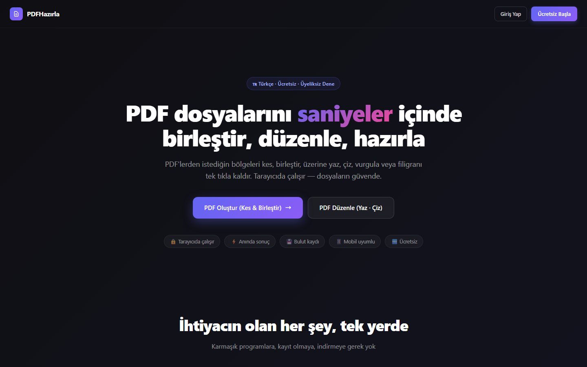

Bilişim Teknolojileri Öğretmeni · Isparta
Bir okulun günlük işleyişini yazılımla kolaylaştırıyorum.
10 yıldır sınıftayım. Öğretmenlikte gördüğüm her aksayan işi bir uygulamaya dönüştürüyorum: tahtaların kilidinden veli çağrısına, yoklamadan laboratuvar yönetimine kadar.
- 8
- Okulda her gün kullanılan sistem
- 10+
- Yıl öğretmenlik deneyimi
- 4
- Platform: web, mobil, masaüstü, kiosk
- 1
- Geliştirici — tasarımdan yayına
01 — Okulda bir gün
Sabah zilinden akşam çıkışına, her saatte bir uygulama çalışıyor.
Öne çıkan proje
PDF Hazırla
Öğretmenler için PDF editörü — Türkçe, ücretsiz.
Farklı kaynaklardan soru ve alıştırma toplayıp kendi çalışma sayfanızı saniyeler içinde hazırlayın. PDF'lerden istediğiniz bölgeleri kesip birleştirin, üzerine yazın, çizin, vurgulayın ya da filigranı tek tıkla kaldırın. Her şey tarayıcıda çalışır; dosyalar sunucuya gönderilmez.
- Bölge kes & birleştir
- Yazı, çizim ve vurgulama
- Akıllı filigran kaldırma
- Telefon, tablet ve bilgisayarda çalışır

02 — Uygulamalar
Geliştirdiğim her şey
03 — Hakkımda
Önce öğretmenim, sonra geliştirici.
10 yıldır özel bir eğitim kurumunda Bilişim Teknolojileri Öğretmeni olarak çalışıyorum. Yazılımlarımın çıkış noktası hep aynı: okulda her gün yaşanan, kâğıtla ya da telefonla çözülmeye çalışılan bir sorun.
Web tarafında React, Next.js ve Vite; mobilde React Native ve Expo; masaüstünde C# ve .NET ile geliştiriyorum. Veriyi Firebase ile tutuyor, uygulamaları Vercel üzerinden yayınlıyorum. Fikirden kuruluma kadar tüm süreci kendim yürütüyorum.
Web
ReactNext.jsViteTypeScriptVercel
Mobil
React NativeExpoXcodeApp Store ConnectRevenueCat
Masaüstü
C# / .NETWindows FormsWebView2C / C++
Veri & Altyapı
FirebaseFirestoreSQLGit & GitHub
04 — İletişim
Okulunuz için bir fikriniz mi var?
Bir proje, iş birliği ya da sadece bir soru — yazmanız yeterli.
yasinyel32@gmail.com